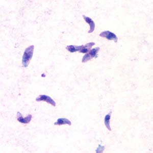

The parasite behind the cat headlines.
A widespread single-celled parasite with a complex life cycle—and a reputation bigger than the evidence.

CDC / DPDx · Public domain
More than a litter-box story
People can acquire Toxoplasma from contaminated undercooked meat, produce, water, or material contaminated by cat feces. Cats are important to its life cycle, but simply owning or petting a cat is not the same as swallowing the parasite. Most healthy people have no symptoms.
Who is most vulnerable?
New infection during or just before pregnancy can threaten the developing baby. Severe immune suppression can allow an old infection to reactivate. Eye disease can also occur. Prevention includes safe food preparation, gloves for gardening, handwashing, and appropriate litter-box precautions.
At the laboratory bench
Diagnosis often uses blood antibody tests; molecular testing and other investigations may be needed in specific situations. A positive antibody result needs interpretation—it does not automatically mean a new, active infection.
Treatment
Many healthy people do not need medication. Pregnancy, eye disease, and weakened immunity require individualized care. When needed, treatment may combine pyrimethamine and sulfadiazine with folinic acid. Current drugs do not completely remove all persistent tissue cysts.
Does it control a human mind?
That has not been demonstrated. Experiments show altered fear and exploration in infected rodents, but results vary. Some studies find broad changes in predator avoidance rather than a special attraction to cats. Animal behavior findings are not proof of human “mind control.”
Sources & further exploration
- CDC · Toxoplasmosis
- CDC · Toxoplasmosis treatment
- CDC · Toxoplasmosis clinical overview
- Boillat et al., 2020 · Predator fear in infected mice
Educational content reviewed October 4, 2026. Photographs show real specimens or research observations; stains and imaging methods affect their appearance. CDC images are available free from CDC. Their use does not imply endorsement by CDC, HHS, or the U.S. Government.